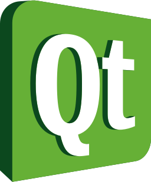

Estudios realizados
-
Grado en ingeniería informática en la Universidad de Burgos
2017-2021
Nota media: 7.89 -
Máster en ingeniería web en la Universidad de Oviedo
2021-2023 (estimado)
Actividad profesional
-
Arcadia Consulting Burgos: Desarrollador backend Java
2021-actualidad
Conocimientos de programación


- 


Otras habilidades
- Control de versiones: Git
- Bases de datos SQL y Mongo
- Desarrollo dirigido por pruebas (TDD)
- Uso de Windows y Linux